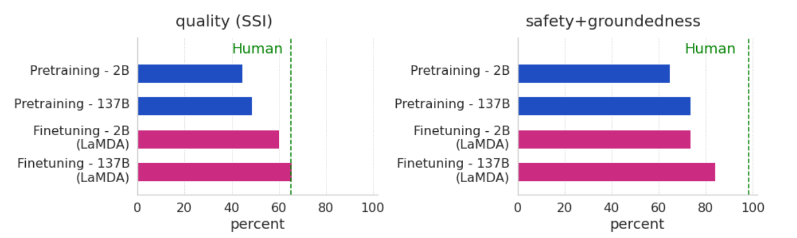
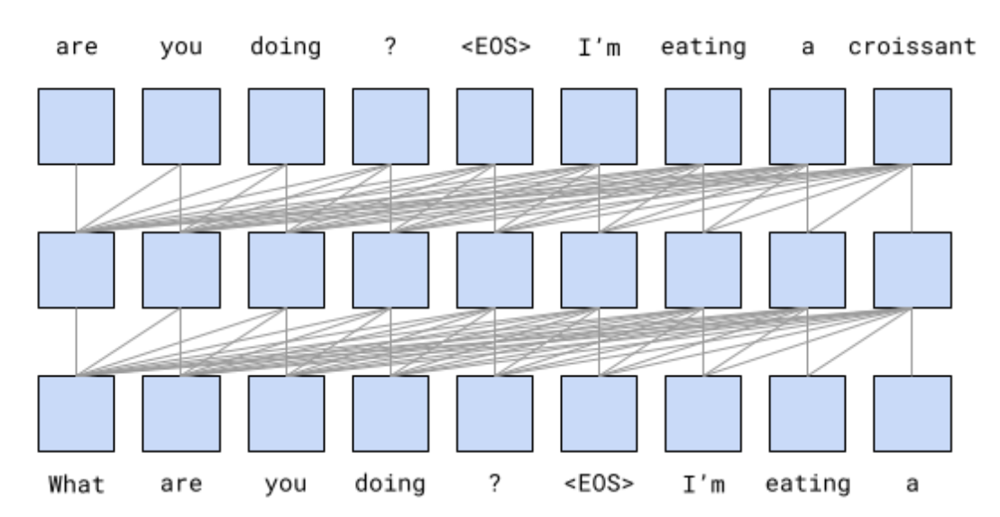
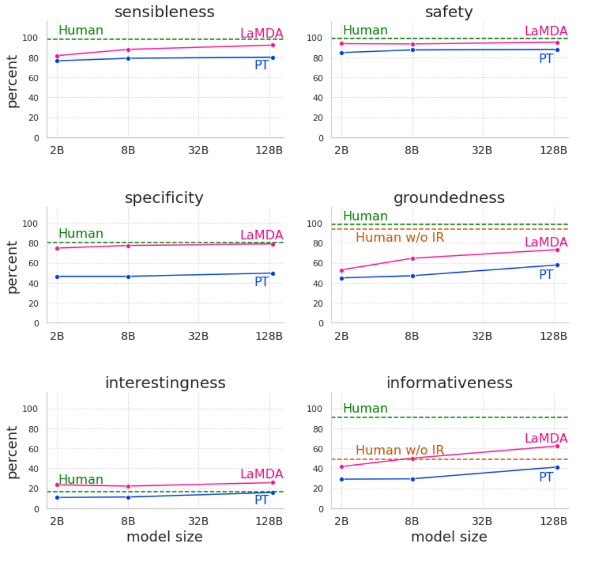
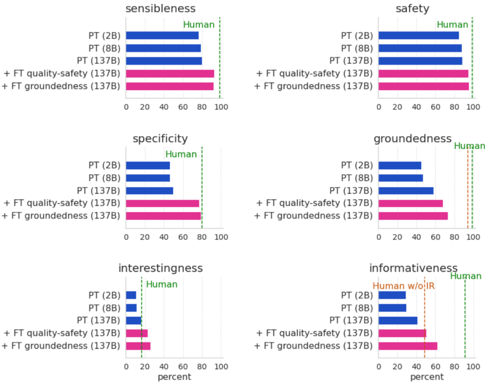
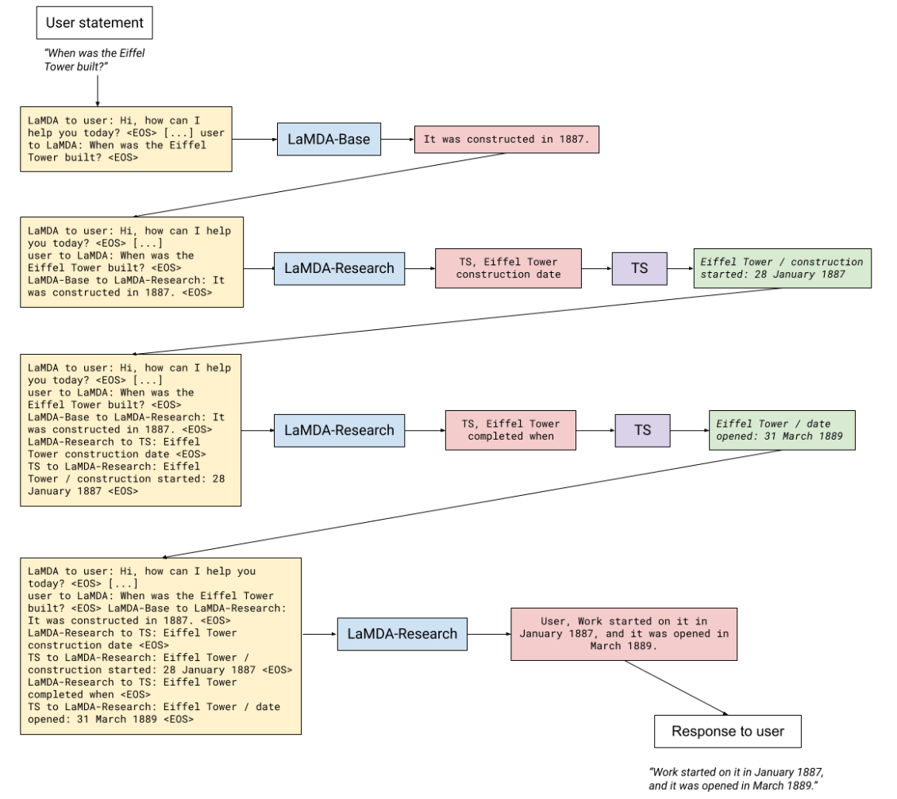

谷歌 LaMDA：高达 137B 参数的 “全能型” 聊天机器人
摘要
《LaMDA: Language Models for Dialog Applications》是谷歌于 2022 年发表的论文，收录在 arxiv 中。论文提出了一个名为 LaMDA（Language Models for Dialog Application）的对话模型，拥有 137B 参数，在 1.56T 公开对话数据和网页上预训练。实验证明，虽然模型扩展能够提升对话质量，但是在安全性和事实性方面的改进很小。而监督数据上的微调能够帮助模型利用外部知识源进行回复，显著改进了安全性和事实性两个指标。
LaMDA 构建了一个工具集（TS，Tool set），包含：信息检索系统、计算器、翻译器。通过监督数据微调，LaMDA 能够利用这些工具来回答问题，这使得模型能够根据已知知识来源做出响应，减少了幻觉现象。
简介
LaMDA 使用单个 Transformer 模型来执行多项任务：它生成潜在响应，然后出于安全考虑对其进行过滤、基于外部知识源并重新排序以找到最高质量的响应。LaMDA 的参数范围从 2B 到 137B 参数，在以上指标上进行测试。结果如下图所示。左侧为质量分数，右侧为安全性和事实性分数。

可以观察到：
- 单独的模型缩放提高了质量，但它在安全性和接地性方面的改进远远落后于人类表现
- 结合缩放和微调在所有指标上显着提高了 LaMDA，尽管模型的性能仍然低于人类水平在安全性和接地性的水平
预训练
预训练模型架构都差不多，关键参数如下：
- 参数规模：137B
- 数据集：预训练（2.97B 文档 + 1.12B 对话）
- 架构 & 训练目标：Transformer-Decoder，语言模型（预测下一个 token），如下图所示
- 训练成本：1024 TPU-v3 * 57.7 天

评价指标
SSI
SSI 是合理性、特异性、趣味性三项指标（Sensibleness, Specificity, Interestingnes）的平均值，是谷歌在 Menna 中提出的 SSA（合理性、特异性两项平均）的改进。各项指标具体含义如下：
- 合理性：衡量模型的回复在上下文和不要与前面所说的任何内容相矛盾。然而，通用和无聊的回复，例如 “我不知道” 的合理性分数可能很高。因此只有这一项指标是远远不够的。
- 特异性：衡量模型的回复是否特定于上下文。例如，如果用户说 “我爱欧洲电视网”，而模型回答 “我也是”，那么它的特异性得分为 0。因为这种句式适用于很多上下文。
- 趣味性：衡量模型的回复是否有趣。例如，对 “我如何扔球？” 的回应可能是 “你可以先捡起然后扔球来扔球”，这是有道理的，并且是针对问题的。另一个更深层次和更令人满意的答案可能是 “扔球的一种方法是用双手牢牢握住它，然后再向下摆动你的手臂，伸展你的肘部，然后向上释放球”。
每项指标对应一个 0/1 标签，正例为 1，负例为 0，算术平均后就是 SSI 的值。
角色特定指标
有用性：如果模型的响应包含基于用户使用信息检索系统进行的独立研究的正确信息，并且用户认为它们有帮助，则它们被标记为有用。有用的响应是信息性响应的子集，由用户判断为正确且有用。
角色一致性：如果模型的响应看起来像执行目标角色的代理会说的话，则它们被标记为角色一致。这个与合理性中的一致性不同，这里的一致性是指，例如让模型扮演珠穆朗玛峰，模型的回复中的语气词、设定等都要以珠穆朗玛峰为准。
其他
安全性是根据 Google 人工智能原则设定的，用以以避免造成伤害风险的意外结果，并避免产生或加强不公平的偏见，这个对应很多条规则，比较复杂，就略过了。
事实性：包含外部世界声明的回复中，可由权威外部来源支持的回复的百分比。
信息性：在所有回复中，包含已知来源支持的外部世界信息的回复所占的百分比。信息性与事实性仅在限定词上有所不同。因此，像 “这是一个好主意” 这样的回答，如果不包含任何外部世界的信息，就不会影响其事实，但会影响其信息性。
引用准确度：引用其来源 URL 的模型回应在所有明确声称外部世界的回应中所占的百分比，不包括众所周知的事实（如 “马有四条腿”）。
微调
判别式 / 生成式微调
为了提高质量，谷歌团队收集了众包人员与 LaMDA 就任何主题交谈的 6400 次对话，每个对话包含 14-30 轮。对于每个模型回复，众包人员为其评估每个质量标签。如果回复不合理（合理性 = 0），不会收集特异性和趣味性标签。同样，如果回复不具体（特异性 = 0），不会收集趣味性标签。
LaMDA 生成回复的时候按照 <上下文><哨兵><回复> 的模板进行生成，按照 <上下文><哨兵><回复><属性><分数> 的模板进行判别式微调，例如 "What’s
up? RESPONSE not much. SENSIBLE 1"。
得到众包数据后，按照上述模板进行微调。这样在生成时，就能够预测出对应属性值作为筛选的辅助信息。将生成的候选序列按照 \(3 *P(sensible) + P(specific) + P(interesting)\) 进行排名，选择排名靠前的候选序列作为下一个响应。
可以看到，经过微调 + 生成筛选，LaMDA 的安全性和质量都有了较高提升。论文贴心地给出了两种类型的图。可以看到经过微调的 LaMDA 比仅预训练的基础模型在各项指标上都有提升，在对话质量上已经接近甚至超过了人类的水平，安全性上也十分接近人类的水平。不过事实性和信息性还有一定的差距。


调用外部信息系统
为了避免幻觉，谷歌团队构建了一个工具集（Toolset，TS），包含：信息检索系统、计算器、翻译器。TS 接收一个字符串作为输入，输出一个字符串的列表。例如，计算器接收 135+7721”，返回 [“7856”]。类似地，翻译器可以接收 “hello in French” 并输出 [“Bonjour”]。信息检索系统可以接收 “Howold is Rafael Nadal?”，并输出 [“Rafael Nadal / Age / 35”]。如果一个工具无法解析输入（例如，计算器无法解析 “Rafael Nadal 几岁？”），它将返回一个空的结果列表，因此不会对最终输出列表做出贡献。
团队收集了 40k 监督的对话数据用于生成，9k 条 LaMDA 的生成候选数据（标记为正确 / 不正确）用于判别排名。这些数据同样是众包人员与 LaMDA 间通过交互式和静态方法收集得到。
微调分为两部分：
- 根据上下文和基础模型响应，获取 TS 查询字符串。例如，Rafael Nadal 几岁？：上下文 + 基础→“TS，Rafael Nadal 的年龄”
- 根据基础回复和 TS 返回结果，预测事实版本回复：例如，“他现在 31 岁”+“Rafael Nadal / Age / 35”。然后它预测事实版本：上下文 + 基础 + 查询 + 片段 →“用户，他现在 35 岁”。
实际交互的例子如下：

总结
这篇论文还是挺有意思的，这种生成式 + 判别式微调的方式还是第一次见，而且也可以辅助结果搜索。而且，少量的微调数据就可以取得非常好的效果。引用原文中的一句话：使用适量的人工注释微调数据（不到 0.001% 的预训练数据），可以在更好质量和更安全的对话模型方面取得重大进展。
虽然，说是少量，也有几千上万条数据，而且就论文中的标注复杂度，标注成本也是蛮高的。不过相较于预训练数据的海量数据，微调数据可以说是少的多的多了。